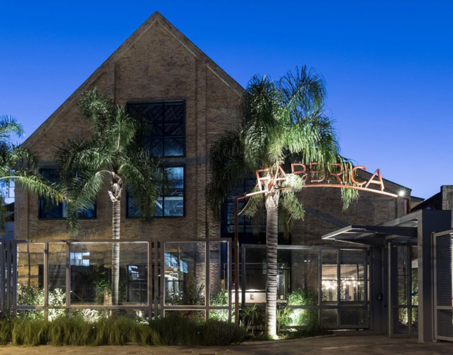

Fabbrica
Complexo gastronômico e cultural da cidade de Caxias do Sul.
A Fabbrica históricamente já abrigou vinícolas, vidrarias, fundições e curtumes.
Após 70 anos de abandono, a construção foi restaurada e surgiu dai uma jóia arquitetônica e urbanística da cidade
Segue abaixo as atrações gastronômicas disponíveis no local:

*Para mais informações clique na logos a seguir.
Para mais informções acesse: Fabricca